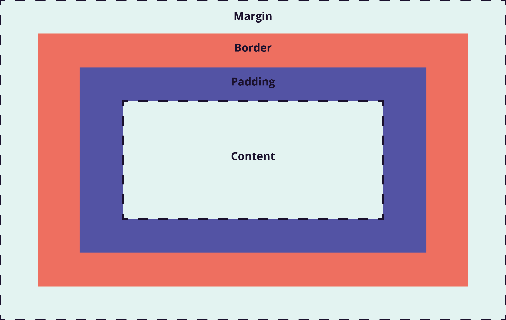

Structuring, Phrasing and Display
Structural (block) elements begin on new lines within the body of an HTML page and, by default, are meant to handle a larger amount of content. Block elements can be placed within other block elements to create nested structures. Some block elements include: p, div, ol, ul, and more. Inline elements are smaller, and only occur in one line of the body of an HTML page. These elemetns are meant to create shorter structures and cannot host more elements within. Some inline elements include: big, small, strong, img, and more.
The display properties in CSS are: none, inline, block, and inline-block. 'Inline' displays the items in one line, while 'block' stacks the items on top of each other and goves them their own boxes around each element with individual padding.
Box Model
The CSS Box Model refers to a box that wraps around all elements on a given page. It includes margins, borders, padding, and content. The box-sizing property in CSS allows either the content-box or the border-box tags. The content-box tag sizes the box model to the set width and adds any border and padding after, making the box wider than defined. The border-box tag accounts for border and padding inside the defined width, reducing the size of the content area so the total area does not exceed the defined width.

Background Images
To include images on a webpage, you can use either the HTML img tag or background-image in CSS. Both techniques can yield the same visual result, the choice depends on the reason for the image. If an image is purely for design or isn't part of the main page content, using the background-image tag in CSS is useful. The img tag in HTML is more robust. It should be used when images are related to the content and allows search engines to index them.